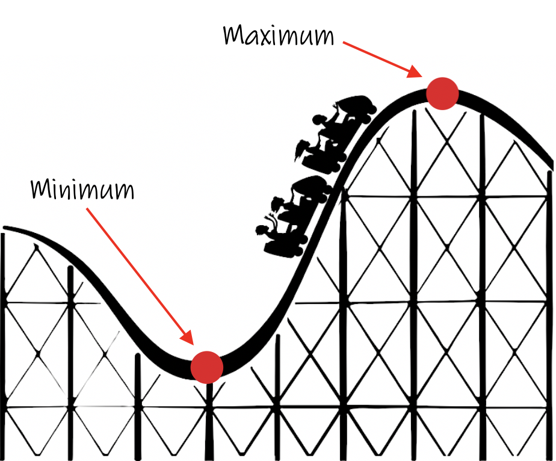
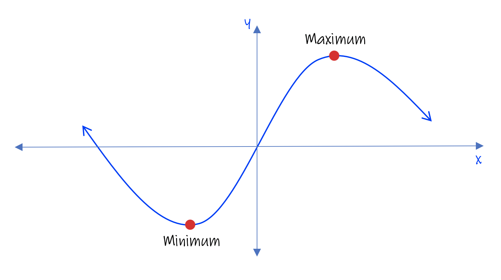
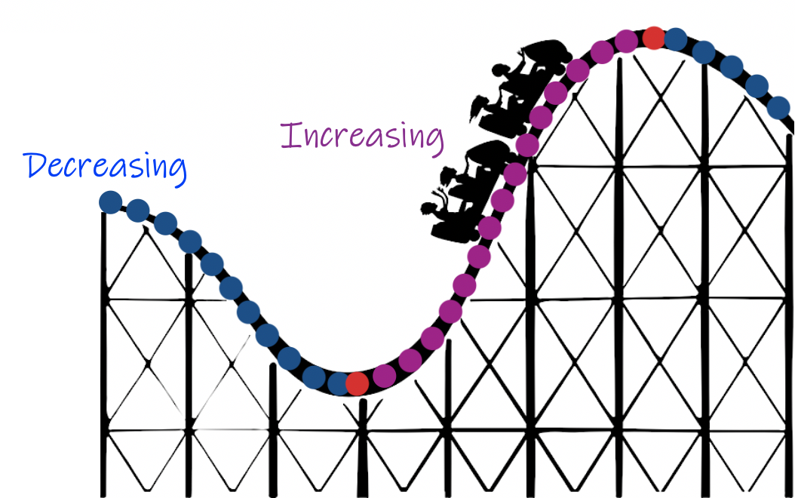
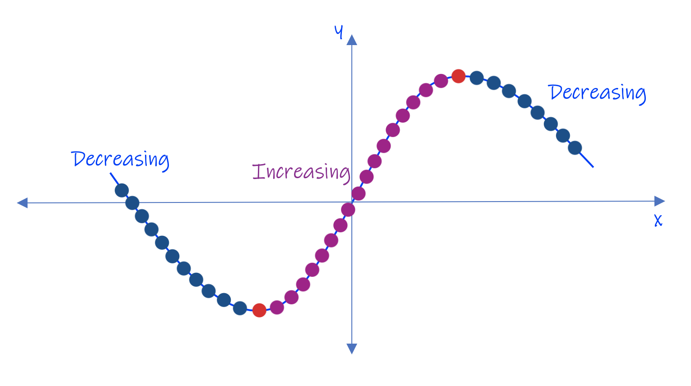
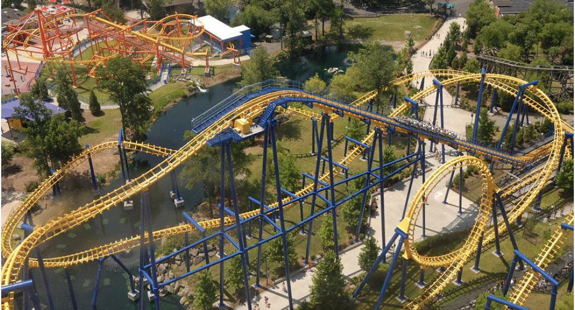
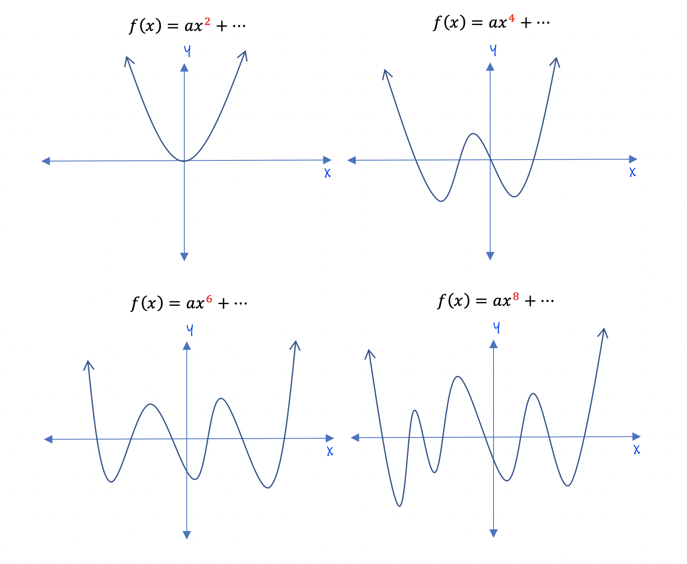
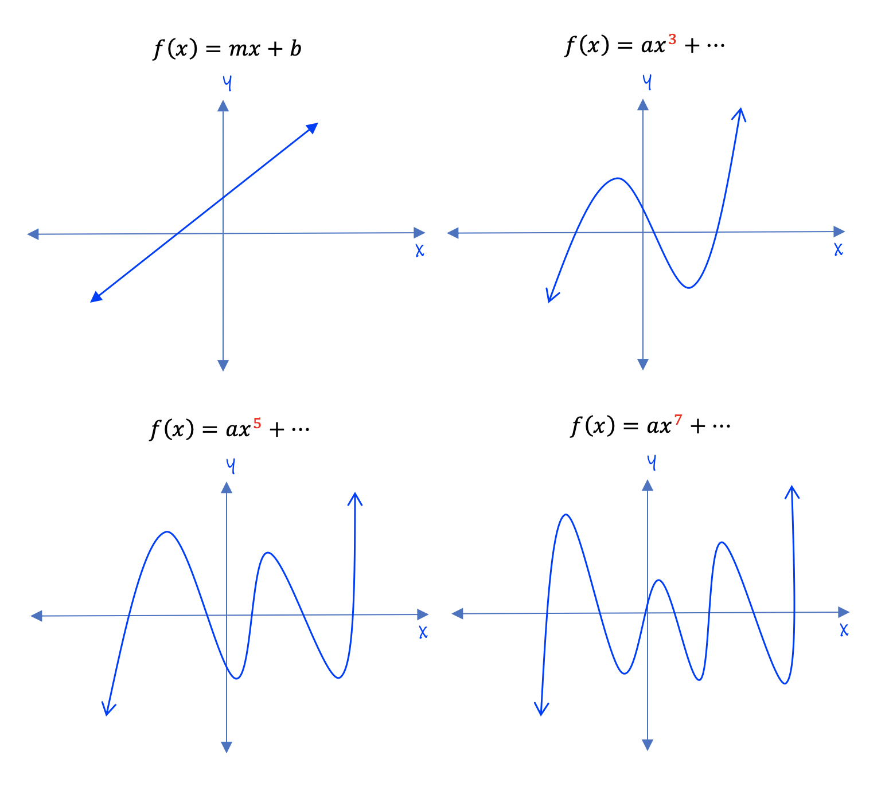
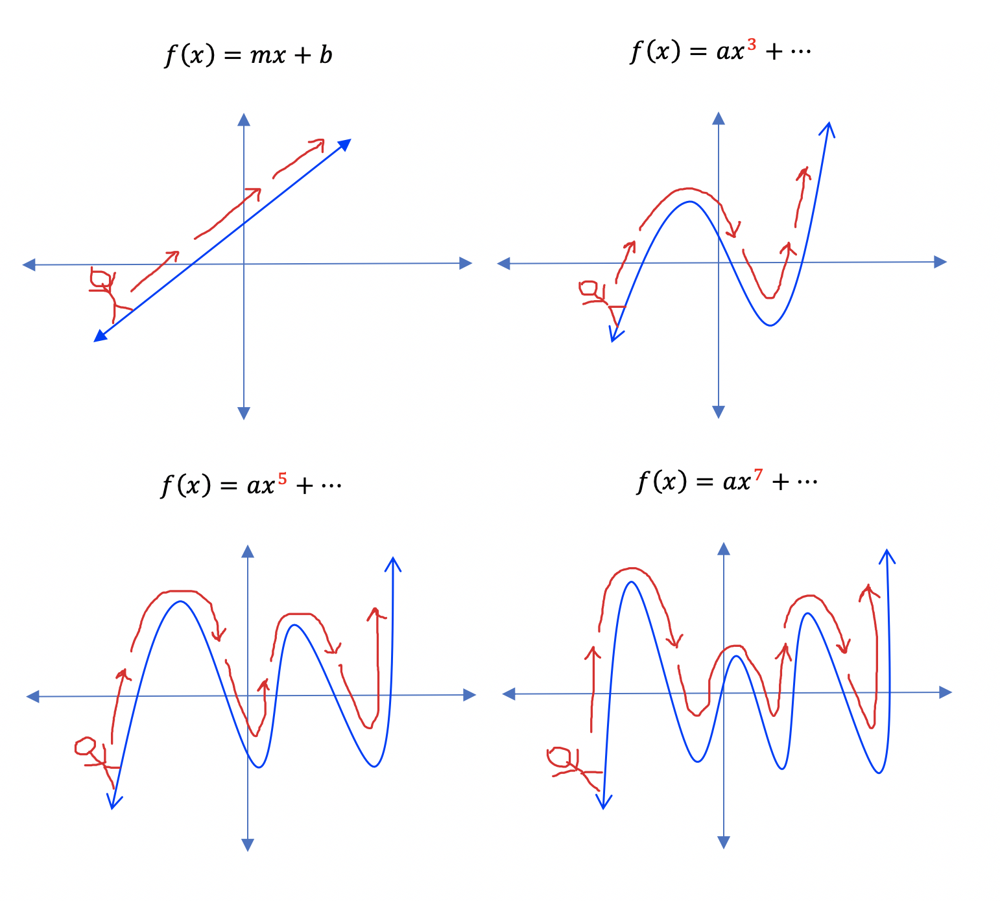

In this unit we will learn about the basic terminology used to describe graphs of polynomial functions.
Please review the Intro to Polynomials unit before starting this module.
A polynomial is an expression that has more than one term. When graphing a polynomial function, the degree of the polynomial tells us a lot about the graph's shape. You can use the degree to determine what the basic picture of its graph will look like and how the parts of the graph will behave.
In order to describe the parts of a graph and the certain characteristics of it, we will need to introduce vocabulary regarding the graph so we can describe the graphs behavior.
Every graph you ever encounter should be examined moving left to right, the same way you would read a sentence. This is a very important concept that needs to be followed. If you train yourself to examine a graph in such a way, then the vocabulary will make sense and you will not get a wrong answer when asked to describe a graph of a function.
It is also helpful to think of "walking a graph" from left to right, using a stick figure to help you. This concept will be used later on as we describe the behavior of a graph.
Maximum means the "most" something can be. It means large.
On a roller coaster, when you reach the top of the track, before you start to go downhill, it is called a Maximum. You are at the highest point possible. It is the same as a graph. The highest point on the graph is called its Maximum. Similarly, the lowest point you can go is called the Minimum. Minumum means small, but in this case it means the lowest point. Using the roller coaster analogy, when you reach the bottom of a hill and just begin to go up again, the location is called a Minimum.
 Since the graphs of polynomials look like a roller coaster, the same terminology is used to describe a graph. Local Maximums and Local Minimums are used to describe a certain "location" where you see a maximum or minimum.
 Placing an x-y axis over the roller coaster does not change anything. Our graph acts the same way and should be read from left to right, ➾ , the same direction the roller coaster above is moving.
When riding the roller coaster, at times the cart is moving uphill, or "Increasing" in height. When going downhill, the roller coaster is "Decreasing" in height.

The image above shows that when the roller coaster is going downhill, it is called a "decreasing" interval (highlighted in blue). When the coaster begins to go uphill, it is called an "inreasing" interval (highlighted in purple). Notice at the minimum and maximum points, the graph changes directions. At the minimum and maximum points the graph is not considered to be increasing or decreasing.
 The increasing and decreasing intervals can be seen on the graph just like the roller coaster. Notice the minimum and maximum points divide the graph into three intervals; two decreasing and one increasing.
For now, we will leave the roller coaster analogy to talk about what is called the "End Behavior" of a polynomial graph. The End Behavior of a function describes the beginning and ending points of a graph. The degree of a polynomial tells you whether the graph is increasing or decreasing at its endpoints.
If the degree of a polynomial is even, the roller coaster starts at the top of a hill and ends at the top of a hill, even though many increasing or decreasing intervals may take place along the ride.
If the degree of a polynomial is odd, the roller coaster starts at the bottom of a hill and ends at the top.

Even degree polynomials always have both ends pointing upwards. The first four even degree polynomials are shown below. Notice both ends are pointing upwards, regardless of the number of increasing and decreasing intervals that occur between its ends. 
Odd degree polynomials always have the left end pointing down and the right end pointing up. The first four odd degree polynomials are shown below. 
It is of benefit to memorize the basic behavior of even and odd degree functions when graphing them. It will help you check your work as you begin sketching graphs by hand.
Don't forget to always read a graph from left to right, even though the left-hand arrows are a little deceiving. This is where a stick figure analogy works best. The stick figure always begins his walk at the left arrow, and "walks" the graph toward the right arrow at the end of the graph. This is called "reading" a graph from left to right, which is always how you should read all graphs. 
Now you try:
The graph of an odd degree function always has both endpoints pointing up.
The maximum point of a graph is its lowest point.